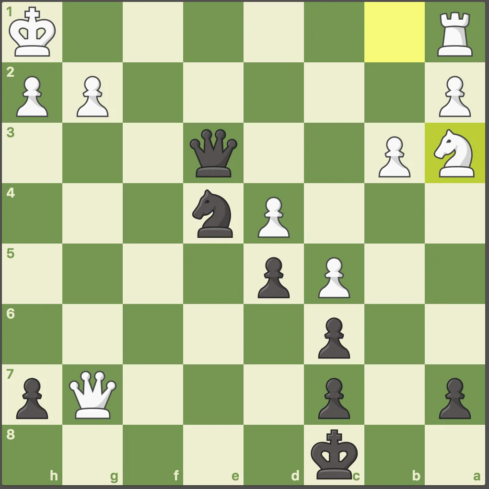
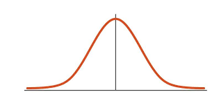

Chess.com · 2018–2026 · Data storytelling
Analyse de 5000 parties d'échecs personnelles jouées en ligne de 2018 à 2026
Ce projet de Data Storytelling vise à comprendre mon style de jeu à partir de 5 093 parties jouées sur Chess.com. L'objectif est d'analyser la progression, le répertoire d'ouvertures et quelques observations statistiques intéressantes des parties d'un joueur d'échecs amateur.
Visualisations
Progression
Évolution du Elo et précision dans le temps.

Explorateur d'ouvertures
Répertoire et visualisations d'ouvertures.
Heatmap des déplacements
Cases du plateau les plus utilisées.

Distribution des parties selon leur longueur
Structure des parties selon leur issue.
Chess Dataviz · 5 093 parties · 2018–2026